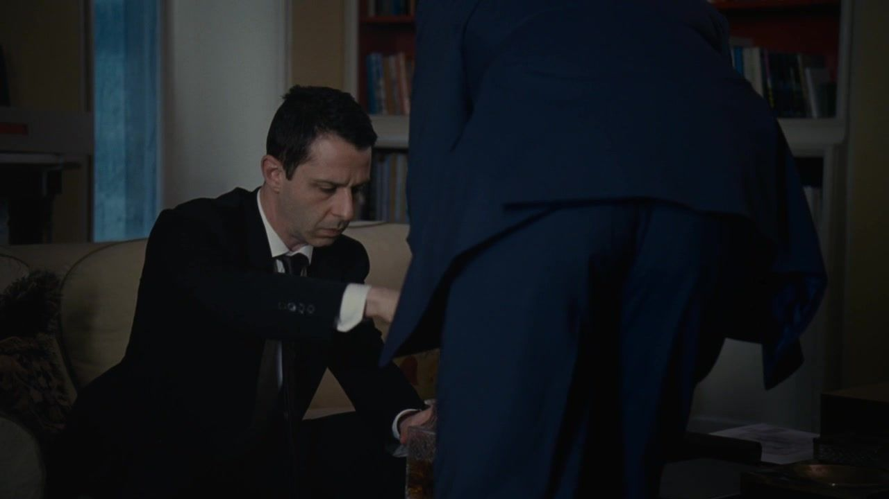
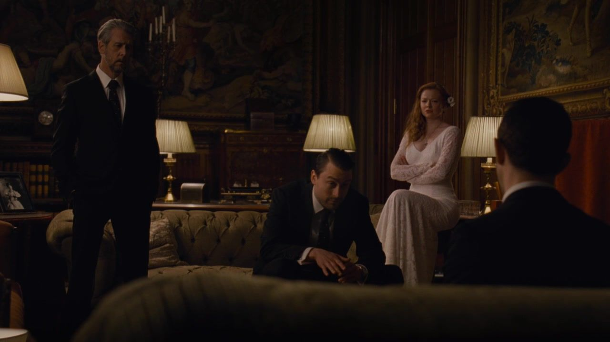
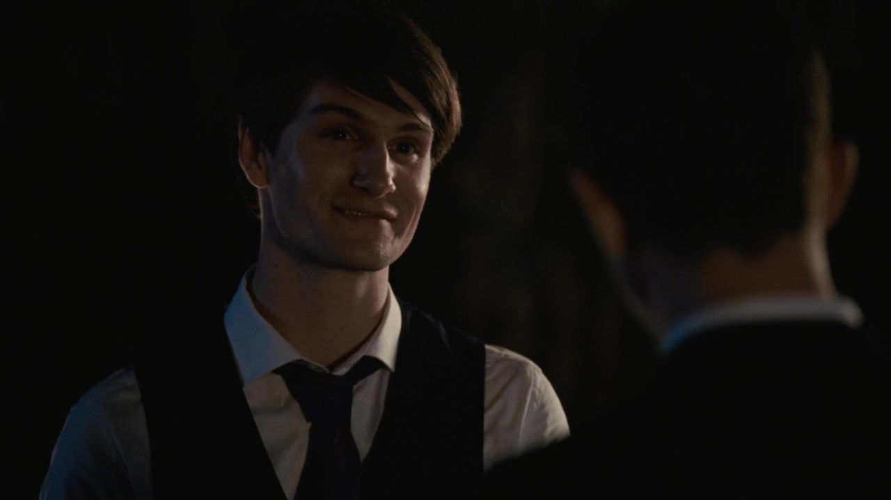
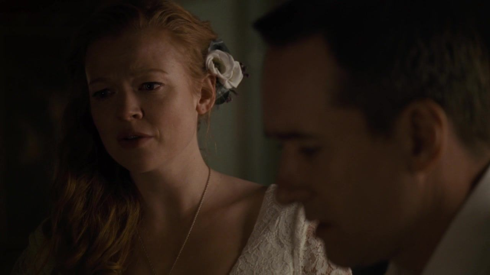
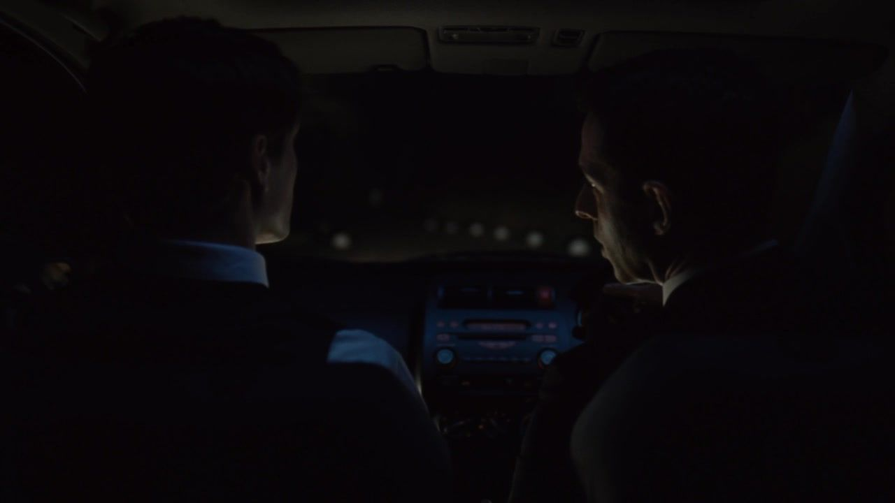
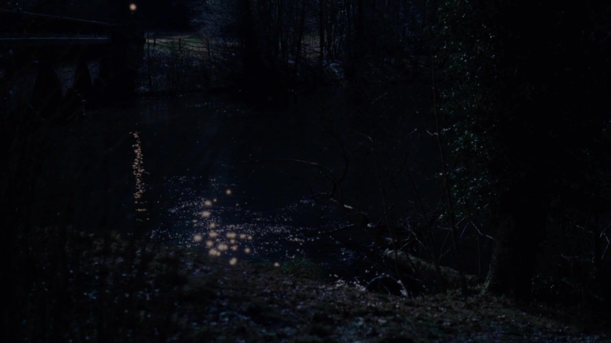
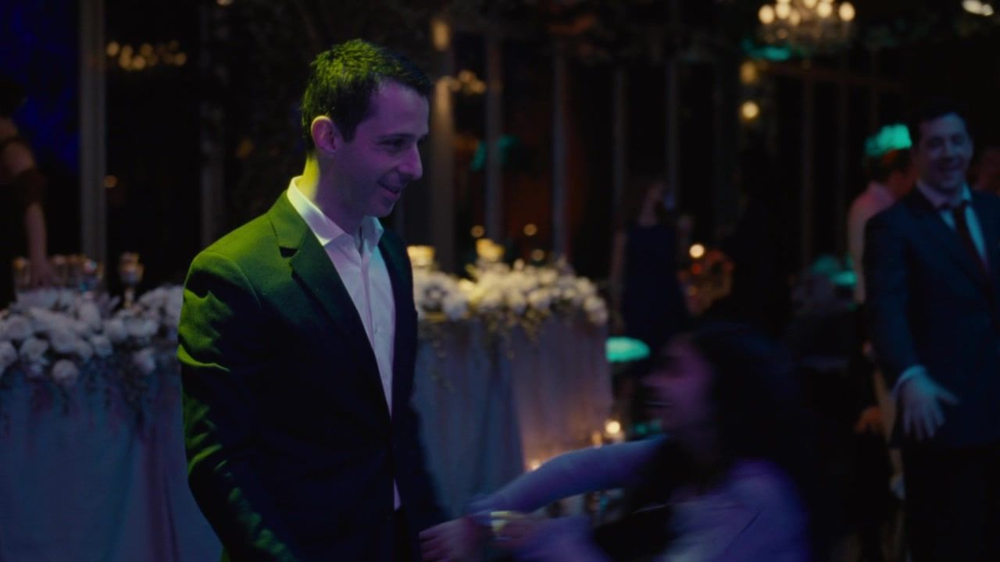

婚礼当天 / 洛根房间
他终于把父亲放进必须应对的局面。


THE ROY FAMILY / 罗伊家族档案 010
SEASON 01 EPISODE 10 Nobody Is Ever Missing
婚礼照常进行，收购要约已经递出。
一场夜里的事故，把胜负之外的人生推到眼前。
剧透边界 包含第一季十集完整剧情，不涉及第二季。
剧情事实 / 个人解读分别标注 · 约 18 分钟阅读THE QUESTION / 从这里读起
肯德尔终于走到不再请求任命的一步：与资本伙伴向父亲递交收购要约。洛根必须应对一个有现实威胁的方案，兄妹也要面对这场进攻发生在婚礼当天。然后，故事让一条本不属于家族争夺的生命进入结局。肯德尔的惊慌值得被理解，但理解不能抹去他的行动；父亲的拥抱含有感情，也同时附着撤回反抗的条件。
公司 谁拥有正式的权力？
家庭 谁仍在等父亲的点头？
阶层 谁可以把别人的人生当游戏？
01 / THE STORY
按本集主线分为三幕；并行发生的谈话与善后，保留其交错关系。
ACT I / SCENES 01—03
婚礼当天 / 洛根房间
婚宴间隙 / 罗曼看直播

婚礼与单独谈话 / 家庭公告

这一幕之后要约递出，火箭失事，家族仪式仍要继续；不同形式的自信都开始面对真实后果。
ACT II / SCENES 04—06
城堡外 / 格雷格开口

新婚夜 / 希芙与汤姆

离开婚宴 / 肯德尔与服务员

这一幕之后格雷格使用副本争位置，希芙重谈婚姻边界，肯德尔在需要药物的状态下离开婚宴。
ACT III / SCENES 07—09
桥边 / 车辆落水

回到城堡 / 舞池和孩子

次日 / 父亲的房间
这一幕之后一名年轻人死亡，肯德尔没有及时求助而离场；父亲提供的保护，要求他交回自己的反抗。
02 / THE PEOPLE
看清家人的位置，再看他们为什么不能轻易站在一起。
 洛根Logan Roy
洛根Logan Roy 玛西娅Marcia Roy
玛西娅Marcia Roy 肯德尔Kendall Roy
肯德尔Kendall Roy 康纳Connor Roy
康纳Connor Roy 罗曼Roman Roy
罗曼Roman Roy 希芙Siobhan “Shiv” Roy
希芙Siobhan “Shiv” Roy 格雷格Greg Hirsch
格雷格Greg Hirsch 汤姆Tom Wambsgans
汤姆Tom Wambsgans
正式收购要约不等于收购已经完成，肯德尔尚未取得公司控制。
婚姻形式与知情时机分开理解；秘密副本的使用也不是公开举报。
父亲承诺处理后续，不等于警方已经作出最终结论，也不证明有预谋陷害。
图示为截至本集的亲属关系与依赖归纳，阶段说明含个人解读，不是正式公司架构；实线与虚线不表示所有人已互相知情。人物头像跨集复用，来源集数在篇末登记。
03 / FOLLOW THE CONSEQUENCE
分清事故本身、事故后的行动与父亲提供的方案。
鹿出现、方向盘被扭动，安德鲁未能逃生。
肯德尔尝试施救后离场，未报警，回到原本的仪式。
帮助附带撤回收购与接受戒治的要求。
04 / BENEATH THE ARGUMENT
本集三组冲突，分开看表面问题、双方诉求与更深的依赖。以下为个人解读。
BENEATH THE ARGUMENT / 个人解读
洛根要处理危机，也要重新控制公司与儿子。
肯德尔想摆脱即将吞没自己的事实与后果。
把父亲只读成毫无感情的操纵者，会漏掉拥抱的真实重量；把拥抱只读成无条件的爱，又会漏掉它出现前已经谈好的代价。两者在同一动作里发生。
首集肯德尔试着以能力换认可，季终他在崩溃中得到认可。此时父亲不再需要证明他是否够强，只需要提供他无法独自承担的解释。救援恢复了依赖，依赖又撤回了反抗。
事实边界不把父亲的承诺写成司法结论，也无证据证明事故由他策划。
BENEATH THE ARGUMENT / 个人解读
希芙希望诚实面对自己的欲望与关系需要。
汤姆希望承诺在决定结婚之前就已被共同理解。
讨论非单偶关系本身不是唯一问题，迟到与不对等才让这一幕难受。汤姆已经完成婚礼，并把家族归属押在这段关系里，此刻说接受，与此前能否自由决定不是同一个问题。
他赶走内特的动作既有真实的自尊反抗，也把无法向新娘完整表达的愤怒放到较可控制的人身上。得到一个局部胜利，未必修复了婚姻中更大的不均衡。
事实边界不把他的接受写成事先同意此前隐瞒，也不预判后季婚姻走向。
BENEATH THE ARGUMENT / 个人解读
肯德尔在惊慌中想重新获得安全。
安德鲁的死亡要求被看成一条具体生命的丧失。
叙事给肯德尔的恐惧很多时间，却没有让这段时间替他完成免责。他尝试施救的动作要保留，没有报警离开的选择也必须保留；二者不能互相删去。
父亲的方案把死亡重新放进家族可以管理的叙述。最令人不安的不是一句话就真的抹去事实，而是拥有资源的人能够让另一个人的死亡，首先成为自己家怎样继续下去的问题。
事实边界事故不是本页可认定的蓄意杀人；同样不以惊慌替离场与掩饰开脱。
05 / BETWEEN THE LINES
把短句放回场景，听清一段关系怎样改变。
洛根 → 肯德尔
You're my number one boy.你是我的头号好儿子。中文自译
说话时刻儿子接受撤退条件、崩溃时。
个人解读首集最渴望的认可，此时与最彻底的依赖重叠；温柔不是没有力量的东西。
汤姆 → 内特
Put my fuckin' wine back.把我的酒他妈的放回去。中文自译
说话时刻把他从婚宴赶走时。
个人解读他终于能在一个具体对象面前下命令，婚姻里更难提出的要求却仍然留着。
希芙 → 汤姆
Is that OK to say to you?我可以这样对你说吗？中文自译
说话时刻新婚夜提出非单偶婚姻期待之后。
个人解读询问听起来给出同意的机会，时机却让拒绝背负了已经完成的婚礼。
三句共 17 个英文词，核对自本集非官方对白转录；中文为本页自译。“说话时刻”为情境概括，解读并非人物明确说出的意图。核对转录 ↗
06 / WATCH AGAIN
只讨论截至本集的呼应，不借后续情节倒推人物。以下为个人解读。
END OF EPISODE 10 / 本集停在这里
第一季没有交出一个新王。
它留下一个重新依赖父亲的儿子，
和一条不会因为拥抱而复原的生命。
认可、保护与控制，到底何时被他们学成了同一种语言？
收购行动被肯德尔撤回；安德鲁死亡；希芙与汤姆结婚并重谈关系；格雷格使用文件议价。
事故最终如何处理、人物怎样承担后果，以及下一阶段的公司与家庭关系。
第一季到此结束。页面不涉及第二季及之后的具体剧情。